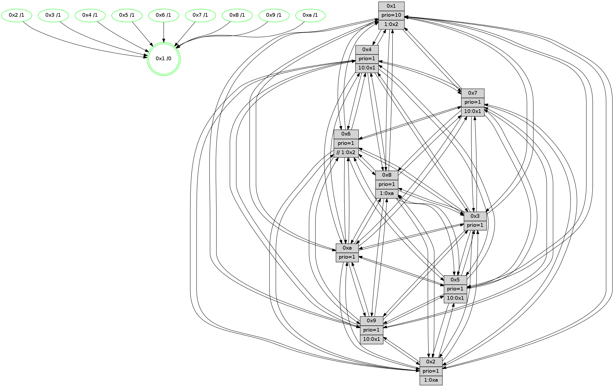

>> << IDX [start] -100 -25 -5 +0 +5 +25 +100 [1295.32778311]
 Previous packets
----------------------------------------------------------------------
1290.598990 beacon01(faad) #0 coord=01,02,03,04,05,06,07,0a,09,08 cycle=688.0ms assoc
-- color-indic=1 64 5c 87
1290.608973 beacon02(faad) #0 coord=01,02,03,04,05,06,07,0a,09,08 cycle=688.0ms assoc 64 cf b6
1290.618973 beacon03(faad) #0 coord=01,02,03,04,05,06,07,0a,09,08 cycle=688.0ms assoc 64 b5 fb
1290.628974 beacon04(faad) #0 coord=01,02,03,04,05,06,07,0a,09,08 cycle=688.0ms assoc 64 c2 11
1290.638973 beacon05(faad) #0 coord=01,02,03,04,05,06,07,0a,09,08 cycle=688.0ms assoc 64 b8 5c
1290.648974 beacon06(faad) #0 coord=01,02,03,04,05,06,07,0a,09,08 cycle=688.0ms assoc 64 36 8b
1290.658973 beacon07(faad) #0 coord=01,02,03,04,05,06,07,0a,09,08 cycle=688.0ms assoc 64 4c c6
1290.668979 beacon0a(faad) #0 coord=01,02,03,04,05,06,07,0a,09,08 cycle=688.0ms assoc 64 3d cd
1290.678979 beacon09(faad) #0 coord=01,02,03,04,05,06,07,0a,09,08 cycle=688.0ms assoc 64 b3 1a
1290.688978 beacon08(faad) #0 coord=01,02,03,04,05,06,07,0a,09,08 cycle=688.0ms assoc 64 c9 57
1290.700445 [Hello(9): seq=767 sym=2,5,3,4,7,6,8,10,1 sysInfo=hasWarning stat=2:10,14,7,10/5:4,6,10,7/3:12,3,0,3/4:1,3,11,0/7:3,8,14,3/6:7,8,6,12/8:15,9,11,4/10:9,5,14,4/1:6,8,5,1]
1290.704117 [Color(1) seq=503 @0:0 prio=10 >1.@2,1.@3,1.@4,1.@5]
1290.705782 [Hello(10): seq=756 sym=6,2,3,8,7,5,9,4,1 sysInfo=hasWarning stat=6:5,4,8,2/2:6,15,9,11/3:8,12,13,14/8:13,7,7,2/7:0,11,1,8/5:7,10,5,0/9:14,11,15,4/4:14,9,0,0/1:12,2,12,1]
1290.709614 [STC(5)->1 #0.212 tree-change,inconsistent-stability,stable,to-color d=1]
1290.711237 [Hello(4): seq=823 sym=5,7,6,2,3,9,8,10,1 sysInfo= stat=5:9,2,11,1/7:3,6,1,1/6:9,14,0,13/2:0,3,9,0/3:7,8,3,14/9:11,11,5,1/8:4,15,6,1/10:0,0,7,14/1:5,13,3,1]
1290.714011 [Hello(8): seq=767 sym=5,2,3,7,9,6,4,10,1 sysInfo=hasWarning stat=5:14,1,14,0/2:10,15,0,12/3:2,3,5,3/7:1,2,0,0/9:7,2,0,4/6:4,3,2,14/4:4,13,5,0/10:1,7,4,4/1:10,0,3,0]
1290.719052 [STC(2)->1 #0.212 tree-change,inconsistent-stability,stable,to-color d=1]
1290.720328 [STC(9)->1 #0.212 tree-change,inconsistent-stability,stable,to-color d=1]
1290.722829 [Hello(7): seq=823 sym=2,3,5,6,4,8,9,10,1 sysInfo=hasWarning stat=2:15,8,8,3/3:6,0,10,3/5:2,7,3,2/6:9,7,8,10/4:9,12,3,0/8:5,2,4,0/9:5,10,4,1/10:2,3,7,6/1:13,9,1,0]
1290.725444 [Color(8) seq=422 @0:0 prio=1 >1.@a]
1290.727116 [STC(4)->1 #0.212 tree-change,inconsistent-stability,stable,to-color d=1]
1290.728820 [Color(5) seq=386 @0:0 prio=1 >10.@1,1.@6,1.@7,1.@8]
1290.731559 [STC(7)->1 #0.212 tree-change,inconsistent-stability,stable,to-color d=1]
1290.733684 [TreeStatus(4)-.->1 #0.212 tree-change,inconsistent-stability,stable child=1]
1290.736772 [Color(4) seq=362 @0:0 prio=1 >10.@1,1.@2,1.@3,1.@5]
1290.739524 [Color(7) seq=351 @0:0 prio=1 >10.@1,1.@5,1.@6,1.@8]
----------------------------------------------------------------------
1291.387122 beacon01(faad) #0 coord=01,02,03,04,05,06,07,0a,09,08 cycle=688.0ms assoc
-- color-indic=1 64 88 b2
1291.397104 beacon02(faad) #0 coord=01,02,03,04,05,06,07,0a,09,08 cycle=688.0ms assoc 64 1b 83
1291.407103 beacon03(faad) #0 coord=01,02,03,04,05,06,07,0a,09,08 cycle=688.0ms assoc 64 61 ce
1291.417106 beacon04(faad) #0 coord=01,02,03,04,05,06,07,0a,09,08 cycle=688.0ms assoc 64 16 24
1291.427105 beacon05(faad) #0 coord=01,02,03,04,05,06,07,0a,09,08 cycle=688.0ms assoc 64 6c 69
1291.437105 beacon06(faad) #0 coord=01,02,03,04,05,06,07,0a,09,08 cycle=688.0ms assoc 64 e2 be
1291.447105 beacon07(faad) #0 coord=01,02,03,04,05,06,07,0a,09,08 cycle=688.0ms assoc 64 98 f3
1291.457110 beacon0a(faad) #0 coord=01,02,03,04,05,06,07,0a,09,08 cycle=688.0ms assoc 64 e9 f8
1291.467110 beacon09(faad) #0 coord=01,02,03,04,05,06,07,0a,09,08 cycle=688.0ms assoc 64 67 2f
1291.477110 beacon08(faad) #0 coord=01,02,03,04,05,06,07,0a,09,08 cycle=688.0ms assoc 64 1d 62
1291.488051 [Hello(1): seq=733 sym=4,2,9,5,10,3,8,6,7 sysInfo=coloring-mode-on,ColoringModeRequestCalled stat=4:3,0,10,2/2:8,4,4,4/9:10,2,9,1/5:5,8,11,8/10:3,12,6,7/3:2,10,4,10/8:13,9,6,1/6:10,10,4,15/7:11,7,13,0]
1291.492190 [Color(10) seq=413 @0:0 prio=1]
1291.493907 [Hello(3): seq=824 sym=1,7,6,2,4,8,9,10,5 sysInfo=hasWarning stat=1:8,11,4,0/7:4,14,13,13/6:6,11,2,0/2:14,14,10,1/4:14,10,15,12/8:11,13,8,4/9:3,4,1,0/10:6,0,3,4/5:4,8,4,0]
1291.496610 [Hello(2): seq=820 sym=4,5,7,6,3,9,8,10,1 sysInfo=hasWarning stat=4:10,1,8,12/5:4,0,6,2/7:6,13,9,0/6:1,3,0,0/3:8,0,4,12/9:10,4,15,9/8:3,15,4,11/10:14,12,9,10/1:8,7,14,0]
1291.499112 [Color(9) seq=383 @0:0 prio=1 >10.@1,1.@5,1.@a]
1291.500733 [Hello(6): seq=824 sym=2,3,5,4,7,9,8,10,1 sysInfo=hasWarning stat=2:2,6,1,0/3:10,12,3,1/5:9,10,12,3/4:7,3,12,7/7:3,15,6,14/9:6,6,4,10/8:3,6,15,5/10:15,15,12,12/1:5,6,3,1]
1291.503871 [Color(2) seq=400 @0:0 prio=1 >1.@a]
1291.505607 [Color(6) seq=456 @0:0 prio=1 >>1.@2,1.@3,1.@4]
1291.508641 [Color(3) seq=453 @0:0 prio=1]
1291.510937 [Hello(5): seq=824 sym=7,6,4,3,1,9,8,10,2 sysInfo=hasWarning stat=7:7,13,4,15/6:11,10,1,3/4:7,5,10,14/3:1,3,14,1/1:10,8,0,0/9:14,1,8,10/8:3,13,7,3/10:7,4,7,8/2:12,8,14,7]
----------------------------------------------------------------------
1292.175257 beacon01(faad) #0 coord=01,02,03,04,05,06,07,0a,09,08 cycle=688.0ms assoc
-- color-indic=1 64 34 b7
1292.185240 beacon02(faad) #0 coord=01,02,03,04,05,06,07,0a,09,08 cycle=688.0ms assoc 64 a7 86
1292.195240 beacon03(faad) #0 coord=01,02,03,04,05,06,07,0a,09,08 cycle=688.0ms assoc 64 dd cb
1292.205239 beacon04(faad) #0 coord=01,02,03,04,05,06,07,0a,09,08 cycle=688.0ms assoc 64 aa 21
1292.215241 beacon05(faad) #0 coord=01,02,03,04,05,06,07,0a,09,08 cycle=688.0ms assoc 64 d0 6c
1292.225240 beacon06(faad) #0 coord=01,02,03,04,05,06,07,0a,09,08 cycle=688.0ms assoc 64 5e bb
1292.235240 beacon07(faad) #0 coord=01,02,03,04,05,06,07,0a,09,08 cycle=688.0ms assoc 64 24 f6
1292.245245 beacon0a(faad) #0 coord=01,02,03,04,05,06,07,0a,09,08 cycle=688.0ms assoc 64 55 fd
1292.255245 beacon09(faad) #0 coord=01,02,03,04,05,06,07,0a,09,08 cycle=688.0ms assoc 64 db 2a
1292.265245 beacon08(faad) #0 coord=01,02,03,04,05,06,07,0a,09,08 cycle=688.0ms assoc 64 a1 67
1292.276468 [Hello(10): seq=757 sym=6,2,3,8,7,5,9,4,1 sysInfo=hasWarning stat=6:6,5,8,2/2:7,0,10,11/3:9,13,13,14/8:14,8,7,2/7:1,12,2,8/5:8,11,6,0/9:14,12,0,4/4:15,10,1,1/1:13,2,12,1]
1292.279159 [Hello(9): seq=768 sym=2,5,3,4,7,6,8,10,1 sysInfo=hasWarning stat=2:10,15,7,10/5:5,7,10,7/3:12,4,0,3/4:1,4,12,1/7:4,9,15,3/6:8,9,6,12/8:15,10,11,4/10:9,5,14,4/1:7,8,5,1]
1292.282516 [Color(1) seq=504 @0:0 prio=10 >1.@2,1.@3,1.@4,1.@5]
1292.284896 [Hello(4): seq=824 sym=5,7,6,2,3,9,8,10,1 sysInfo= stat=5:10,2,11,1/7:3,7,1,1/6:10,15,0,13/2:1,4,9,0/3:8,9,3,14/9:12,12,5,1/8:4,15,6,1/10:0,1,7,14/1:6,14,3,1]
1292.287444 [Hello(7): seq=824 sym=2,3,5,6,4,8,9,10,1 sysInfo=hasWarning stat=2:0,9,8,3/3:7,1,10,3/5:3,7,3,2/6:10,8,8,10/4:9,12,3,0/8:5,2,4,0/9:6,11,4,1/10:2,4,7,6/1:14,9,1,0]
1292.291525 [Color(7) seq=352 @0:0 prio=1 >10.@1,1.@5,1.@6,1.@8]
1292.294629 [Hello(8): seq=768 sym=5,2,3,7,9,6,4,10,1 sysInfo=hasWarning stat=5:15,2,14,0/2:11,0,0,12/3:3,4,5,3/7:1,3,1,0/9:8,3,1,4/6:5,4,2,14/4:4,14,6,1/10:1,8,4,4/1:11,0,3,0]
1292.298862 [Color(4) seq=363 @0:0 prio=1 >10.@1,1.@2,1.@3,1.@5]
1292.300527 [Color(5) seq=387 @0:0 prio=1 >10.@1,1.@6,1.@7,1.@8]
1292.307944 [Color(8) seq=423 @0:0 prio=1 >1.@a]
----------------------------------------------------------------------
1292.963390 beacon01(faad) #0 coord=01,02,03,04,05,06,07,0a,09,08 cycle=688.0ms assoc
-- color-indic=1 64 f0 b9
1292.973373 beacon02(faad) #0 coord=01,02,03,04,05,06,07,0a,09,08 cycle=688.0ms assoc 64 63 88
1292.983372 beacon03(faad) #0 coord=01,02,03,04,05,06,07,0a,09,08 cycle=688.0ms assoc 64 19 c5
1292.993372 beacon04(faad) #0 coord=01,02,03,04,05,06,07,0a,09,08 cycle=688.0ms assoc 64 6e 2f
1293.003372 beacon05(faad) #0 coord=01,02,03,04,05,06,07,0a,09,08 cycle=688.0ms assoc 64 14 62
1293.013373 beacon06(faad) #0 coord=01,02,03,04,05,06,07,0a,09,08 cycle=688.0ms assoc 64 9a b5
1293.023373 beacon07(faad) #0 coord=01,02,03,04,05,06,07,0a,09,08 cycle=688.0ms assoc 64 e0 f8
1293.033379 beacon0a(faad) #0 coord=01,02,03,04,05,06,07,0a,09,08 cycle=688.0ms assoc 64 91 f3
1293.043378 beacon09(faad) #0 coord=01,02,03,04,05,06,07,0a,09,08 cycle=688.0ms assoc 64 1f 24
1293.053378 beacon08(faad) #0 coord=01,02,03,04,05,06,07,0a,09,08 cycle=688.0ms assoc 64 65 69
1293.065560 [Hello(5): seq=825 sym=7,6,4,3,1,9,8,10,2 sysInfo=hasWarning stat=7:7,13,4,15/6:11,10,1,3/4:7,5,10,14/3:1,3,14,1/1:10,8,0,0/9:15,1,8,10/8:3,14,7,3/10:8,4,7,8/2:12,8,14,7]
1293.068749 [Hello(6): seq=825 sym=2,3,5,4,7,9,8,10,1 sysInfo=hasWarning stat=2:2,6,1,0/3:10,13,3,1/5:10,11,12,3/4:8,4,12,7/7:4,0,6,14/9:7,6,4,10/8:4,7,15,5/10:0,15,12,12/1:6,7,3,1]
1293.071291 [Color(10) seq=414 @0:0 prio=1]
1293.072581 [Hello(2): seq=821 sym=4,5,7,6,3,9,8,10,1 sysInfo=hasWarning stat=4:11,2,8,12/5:5,1,6,2/7:7,14,9,0/6:1,4,0,0/3:8,1,4,12/9:11,4,15,9/8:4,0,4,11/10:15,12,9,10/1:9,8,14,0]
1293.075388 [Color(2) seq=401 @0:0 prio=1 >1.@a]
1293.078350 [Hello(1): seq=734 sym=4,2,9,5,10,3,8,6,7 sysInfo=coloring-mode-on,ColoringModeRequestCalled stat=4:4,1,10,2/2:9,5,4,4/9:10,3,9,1/5:6,9,11,8/10:4,13,6,7/3:3,11,4,10/8:14,10,6,1/6:11,11,4,15/7:12,8,13,0]
1293.082401 [Hello(3): seq=825 sym=1,7,6,2,4,8,9,10,5 sysInfo=hasWarning stat=1:9,12,4,0/7:5,15,13,13/6:6,11,2,0/2:14,14,10,1/4:15,11,15,12/8:12,14,8,4/9:4,4,1,0/10:7,0,3,4/5:5,9,4,0]
1293.084996 [Color(9) seq=384 @0:0 prio=1 >10.@1,1.@5,1.@a]
1293.087135 [Color(3) seq=454 @0:0 prio=1]
----------------------------------------------------------------------
1293.751521 beacon01(faad) #0 coord=01,02,03,04,05,06,07,0a,09,08 cycle=688.0ms assoc
-- color-indic=1 64 4c bc
1293.761506 beacon02(faad) #0 coord=01,02,03,04,05,06,07,0a,09,08 cycle=688.0ms assoc 64 df 8d
1293.771503 beacon03(faad) #0 coord=01,02,03,04,05,06,07,0a,09,08 cycle=688.0ms assoc 64 a5 c0
1293.781505 beacon04(faad) #0 coord=01,02,03,04,05,06,07,0a,09,08 cycle=688.0ms assoc 64 d2 2a
1293.801506 beacon06(faad) #0 coord=01,02,03,04,05,06,07,0a,09,08 cycle=688.0ms assoc 64 26 b0
1293.811504 beacon07(faad) #0 coord=01,02,03,04,05,06,07,0a,09,08 cycle=688.0ms assoc 64 5c fd
1293.821509 beacon0a(faad) #0 coord=01,02,03,04,05,06,07,0a,09,08 cycle=688.0ms assoc 64 2d f6
1293.831509 beacon09(faad) #0 coord=01,02,03,04,05,06,07,0a,09,08 cycle=688.0ms assoc 64 a3 21
1293.841510 beacon08(faad) #0 coord=01,02,03,04,05,06,07,0a,09,08 cycle=688.0ms assoc 64 d9 6c
1293.853048 [Hello(10): seq=758 sym=6,2,3,8,7,5,9,4,1 sysInfo=hasWarning stat=6:6,6,8,2/2:7,1,10,11/3:10,14,13,14/8:15,9,7,2/7:2,13,2,8/5:9,12,6,0/9:15,13,0,4/4:0,11,1,1/1:14,3,12,1]
1293.855781 [Color(5) seq=388 @0:0 prio=1 >10.@1,1.@6,1.@7,1.@8]
1293.857660 [Hello(4): seq=825 sym=5,7,6,2,3,9,8,10,1 sysInfo= stat=5:11,3,11,1/7:3,7,1,1/6:11,15,0,13/2:2,5,9,0/3:9,10,3,14/9:13,13,5,1/8:4,0,6,1/10:1,2,7,14/1:7,14,3,1]
1293.860505 [Color(4) seq=364 @0:0 prio=1 >10.@1,1.@2,1.@3,1.@5]
1293.863224 [Hello(8): seq=769 sym=5,2,3,7,9,6,4,10,1 sysInfo=hasWarning stat=5:0,2,14,0/2:11,1,0,12/3:4,5,5,3/7:1,3,1,0/9:9,4,1,4/6:6,4,2,14/4:4,14,6,1/10:2,9,4,4/1:12,0,3,0]
1293.867556 [STC(1) #0.213 tree-change,inconsistent-stability,stable,to-color d=0]
1293.869700 [Color(8) seq=424 @0:0 prio=1 >1.@a]
1293.872195 [Color(1) seq=505 @0:0 prio=10 >1.@2,1.@3,1.@4,1.@5]
1293.876944 [Hello(9): seq=769 sym=2,5,3,4,7,6,8,10,1 sysInfo=hasWarning stat=2:10,15,7,10/5:6,8,10,7/3:12,5,0,3/4:2,5,12,1/7:5,10,15,3/6:8,9,6,12/8:0,11,11,4/10:9,5,14,4/1:7,9,5,1]
1293.880166 [Hello(7): seq=825 sym=2,3,5,6,4,8,9,10,1 sysInfo=hasWarning stat=2:0,10,8,3/3:8,2,10,3/5:4,8,3,2/6:11,9,8,10/4:9,13,3,0/8:6,3,4,0/9:7,12,4,1/10:3,5,7,6/1:15,9,1,0]
1293.883299 [Color(7) seq=353 @0:0 prio=1 >10.@1,1.@5,1.@6,1.@8]
----------------------------------------------------------------------
1294.539651 beacon01(faad) #0 coord=01,02,03,04,05,06,07,0a,09,08 cycle=688.0ms assoc
-- color-indic=1 64 78 a4
1294.549634 beacon02(faad) #0 coord=01,02,03,04,05,06,07,0a,09,08 cycle=688.0ms assoc 64 eb 95
1294.559633 beacon03(faad) #0 coord=01,02,03,04,05,06,07,0a,09,08 cycle=688.0ms assoc 64 91 d8
1294.569634 beacon04(faad) #0 coord=01,02,03,04,05,06,07,0a,09,08 cycle=688.0ms assoc 64 e6 32
1294.579635 beacon05(faad) #0 coord=01,02,03,04,05,06,07,0a,09,08 cycle=688.0ms assoc 64 9c 7f
1294.589634 beacon06(faad) #0 coord=01,02,03,04,05,06,07,0a,09,08 cycle=688.0ms assoc 64 12 a8
1294.599634 beacon07(faad) #0 coord=01,02,03,04,05,06,07,0a,09,08 cycle=688.0ms assoc 64 68 e5
1294.609638 beacon0a(faad) #0 coord=01,02,03,04,05,06,07,0a,09,08 cycle=688.0ms assoc 64 19 ee
1294.619638 beacon09(faad) #0 coord=01,02,03,04,05,06,07,0a,09,08 cycle=688.0ms assoc 64 97 39
1294.629639 beacon08(faad) #0 coord=01,02,03,04,05,06,07,0a,09,08 cycle=688.0ms assoc 64 ed 74
1294.641547 [STC(4)->1 #0.213 tree-change,inconsistent-stability,stable,to-color d=1]
1294.645502 [Hello(1): seq=735 sym=4,2,9,5,10,3,8,6,7 sysInfo=coloring-mode-on,ColoringModeRequestCalled stat=4:4,1,10,2/2:9,5,4,4/9:11,4,9,1/5:6,9,11,8/10:5,13,6,7/3:4,12,4,10/8:14,10,6,1/6:11,11,4,15/7:13,9,13,0]
1294.648349 [Color(9) seq=385 @0:0 prio=1 >10.@1,1.@5,1.@a]
1294.650279 [STC(10)->1 #0.213 tree-change,inconsistent-stability,stable,to-color d=1]
1294.653531 [Color(10) seq=415 @0:0 prio=1]
1294.655965 [Hello(6): seq=826 sym=2,3,5,4,7,9,8,10,1 sysInfo=hasWarning stat=2:2,7,1,0/3:11,14,3,1/5:11,12,12,3/4:9,5,12,7/7:5,1,6,14/9:8,7,4,10/8:5,8,15,5/10:1,15,12,12/1:7,8,4,1]
1294.658457 [Hello(2): seq=822 sym=4,5,7,6,3,9,8,10,1 sysInfo=hasWarning stat=4:12,3,8,12/5:6,2,6,2/7:8,15,9,0/6:1,4,0,0/3:9,2,4,12/9:12,5,15,9/8:5,1,4,11/10:0,12,9,10/1:10,9,15,0]
1294.661214 [Hello(5): seq=826 sym=7,6,4,3,1,9,8,10,2 sysInfo=hasWarning stat=7:8,14,4,15/6:12,10,1,3/4:8,6,10,14/3:2,4,14,1/1:11,9,1,0/9:0,2,8,10/8:4,15,7,3/10:9,5,7,8/2:13,9,14,7]
1294.664050 [STC(5)->1 #0.213 tree-change,inconsistent-stability,stable,to-color d=1]
1294.666552 [STC(2)->1 #0.213 tree-change,inconsistent-stability,stable,to-color d=1]
1294.668264 [Hello(3): seq=826 sym=1,7,6,2,4,8,9,10,5 sysInfo=hasWarning stat=1:9,13,5,0/7:6,0,13,13/6:6,11,2,0/2:14,14,10,1/4:0,12,15,12/8:13,15,8,4/9:5,4,1,0/10:8,0,3,4/5:6,10,4,0]
1294.672171 [STC(6)->1 #0.213 tree-change,inconsistent-stability,stable,to-color d=1]
1294.674466 [TreeStatus(6)-.->1 #0.213 tree-change,inconsistent-stability,stable child=1]
1294.676287 [Color(6) seq=458 @0:0 prio=1 >>1.@2,1.@3,1.@4]
1294.681387 [Color(2) seq=402 @0:0 prio=1 >1.@a]
1294.683830 [STC(3)->1 #0.213 tree-change,inconsistent-stability,stable,to-color d=1]
1294.686731 [Color(3) seq=455 @0:0 prio=1]